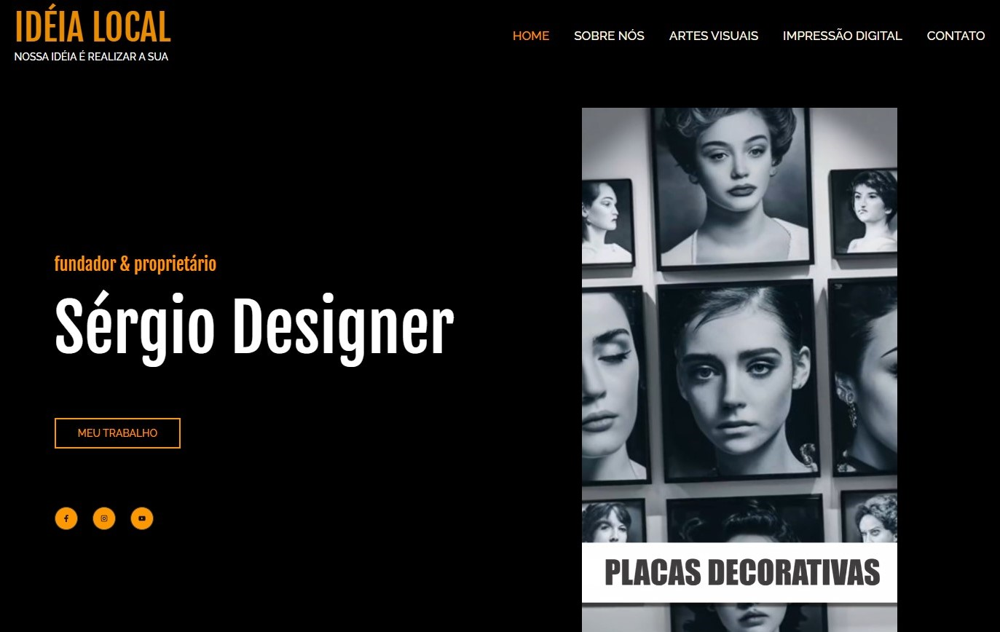
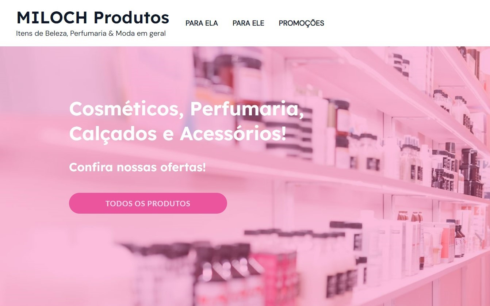
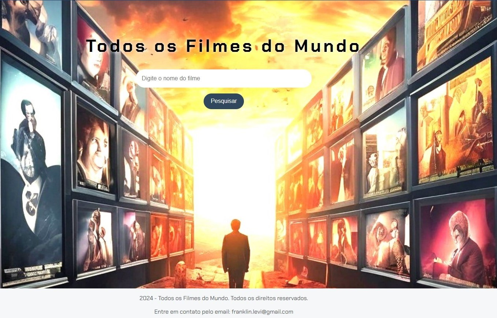

Olá, eu sou o
Franklin Levi Miloch Santos
Gestor, Líder de equipes, Web Designer, Desenvolvedor Web, Estudante de Front End
-
Download CV
Sobre
Sobre Mim
Nome: Franklin L M Santos
Nascimento: Junho de 1977
Graduação: 2° Grau
Experiência: 09 Anos
Fone: 64 98428-9671
Email: franklin.levi@gmail.com
Endereço: Rua Elucidaria, Bairro Martins, Rio Verde-GO
Freelance: Disponível
Gestor de equipes & Desenvolvedor Web.
Gestor de equipe do setor de informática, planejamento de equipe, participação ativa em reuniões de diretoria. Desenvolvedor em formação, em busca de construção de carreira em empresa dinâmica com oportunidades de experimentação em várias áreas.
-
Iniciante em Programação T7 - ONE
ALURA | 19/07/2024
Lógica de programação: mergulhe em programação com JavaScript; Lógica de programação: explore funções e listas; ChatGPT: otimizando a qualidade dos resultados; HTML e CSS: ambientes de desenvolvimento, estrutura de arquivos e tags; HTML e CSS: Classes, posicionamento e Flexbox; HTML e CSS: cabeçalho, footer e variáveis CSS; HTML e CSS: trabalhando com responsividade e publicação de projetos; Git e GitHub: compartilhando e colaborando em projetos; Praticando lógica de programação: Challenge Decodificador de Texto.
-
Desenvolvimento Pessoal T7 - ONE
ALURA | 21/08/2024
Aprender a aprender: técnicas para seu autodesenvolvimento; LinkedIn: como fazer o seu perfil trabalhar para você; Foco: trazendo mais resultados para o dia a dia; Hábitos: da produtividade às metas pessoais.
-
Empreendedorismo, Agilidade e Protagonismo na Carreira G7 - ONE
ALURA | 13/09/2024
Desenvolvimento de carreira: a demanda do mercado; Propósito profissional: seja protagonista da sua carreira; Transição de carreira: um guia para a área da tecnologia; Gestão Ágil: explorando conceitos da agilidade; Empreendedorismo: da ideia ao plano de negócios
-
Desenvolvedor Web
Free-lancer | 2018 - 2024
Utilizando os conhecimentos adquiridos, ingressei no serviço free-lancer de criação de sites e desenvolvimento de aplicações web.
-
Porteiro
SegurPro/Líder Serviços/Gocil/Security | 2020 - 2024
Como porteiro nessas empresas desenvolvi atividades como conferência de material e controle de entrada e saída de pessoal e veículos.
-
Repositor de Frios
Bretas Supermercado | 2018 - 2019
Como repositor, atuava abastecendo a área de vendas, manipulando produtos, controlava a qualidade e validade e solicitava pedidos de produtos com baixo estoque.
-
Sub-Gerente de TI
FACAM-MA | 2009 - 2017
Iniciei minha jornada nessa empresa como operador de computador, onde rapidamente fui promovido para auxiliar de TI e depois de algum tempo cheguei ao status de sub-gerente. Nessa caminhada exerci papel de atendimento ao cliente e colaborador, gestão de equipe do setor de informática, planejamento de equipe, participação ativa em reuniões de diretoria e visita aos pólos de Ensino à distância.
Qualificações
Cursos e Experiências
Meus Cursos
Minhas Experiências
Hard Skill
Minhas Hards Skills
LÓGICA DE PROGRAMAÇÃO / JAVASCRIPT
Lógica de programação: mergulhe em programação com JavaScript; Lógica de programação: explore funções e listas; Desafio do decodificador e de um jogo do número secreto.
HTML / CSS
HTML e CSS: ambientes de desenvolvimento, estrutura de arquivos e tags; HTML e CSS: Classes, posicionamento e Flexbox; HTML e CSS: cabeçalho, footer e variáveis CSS; HTML e CSS: trabalhando com responsividade e publicação de projetos;
PHP / MYSQL
Na minha função na Faculdade do Maranhão eu tive a oportunidade de aprender a linguagem PHP e operar o Banco de dados MySQL, completando minha formação no site CursoEmVideo.com.
WORDPRESS
WordPress - Criação de Site Pessoal com as melhores ferrementas do mercado, Criação de loja virtual com Woocomerce incluindo suporte a pagamento via mercado pago e API integrada com os correios na formação do site CursoEmVideo.com.
Soft Skill
Minhas Softs Skills
Gestão de tempo
Essa habilidade, faz com que eu priorize tarefas e organize minhas atividades para garantir a entrega de projetos no prazo.
Pensamento crítico
Desenvolvi um esquema de códigos para atender ao usuário, para impedir que o cliente soubesse se havia um problema antes da verificação.
Proatividade/Colaboração
Tomo iniciativa, exponho idéias e colaboro com outras equipes, sou criativo, não tenho medo de perguntar e de repassar conhecimento.
Comunicação
Me comunico muito bem, consigo engajar a equipe, uso o conhecimento adquirido para resolver problemas e descobrir suas causas.
Flexibilidade/Inteligência Emocional
Sou capaz de identificar e aproveitar da melhor maneira, a personalidade e capacidades de cada indivíduo. Usando uma abordagem diferente para cada um.
Perfil de Liderança
Independente de minha posição na equipe, sempre acabo sendo visto como referência, por causa das habilidades mencionadas anteriormente.
Projetos
Meus Projetos
Aqui eu separei alguns projetos voltados para área de programação, que é uma de minhas paixões, ao clicar no link você será direcionado para o modelo do projeto!


